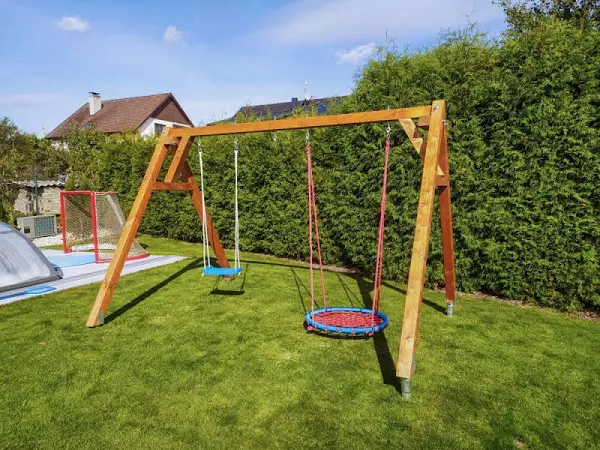
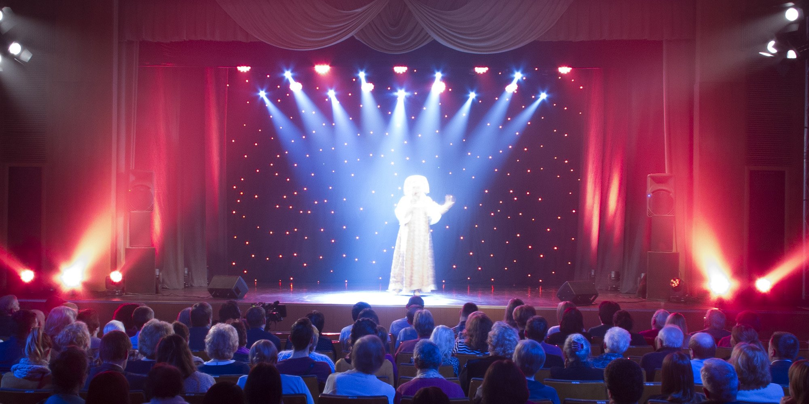

| O nás | Naše hry | Naši herci | Kontakt |
Hledáte hezké divadlo s dobrým plánem her? Hledáte místo kde se můžete podívat na nějaké hry, ale maté děti?
Vítejte v našem divadle a doufáme, že se Vám bude líbit.
Nabízíme tady hernu pro děti kde si budou moc hrát samy a Vás nebudou vůbec obtěžovat.
Děti mají k dispozici velikou hernu a hodně hraček k dispozici je také venkovní zahrádka kde děti mouhoubýt na písku, houpat se na houpačkách, házet si s míčem atd.,proto prosíme rodiče aby vzali svým dětem věci na převlečení
(za zničené oblečení nezodpovídáme).

Naše divadlo tady stojí už od 17. století, ale bohužel bylo během 1. světové války zničeno. Když bylo divadlo konečne opraveno, bylo zničeno během 2. světové války.
V dnešní době už divadlo stojí hezky a je perfektní.
Naši věrní hosté si tady mohou zakoupit věrností balíček,
který zahrnuje skvěelé ceny na lísty a drobné občerstavení.
Také pro rodiče máme k dispozici alkohol (maximálně 5 skleniček na osobu).

Věděli jste? #1
Divadlo má dlouhou a bohatou historii, která sahá tisíce let zpátky. První divadelní představení se objevila v antickém Řecku a Římě
Od této doby se divadelní umění vyvíjelo a přizpůsobovalo se kulturním a společenským změnám.
Z antických tragédií a kemdií až po moderní experimentální divadlo, divadelní umění se stalo zrcadlem naší kultury a společnosti.
Věděli jste? #2
Divadlo poskytuje unikátní zážitek, který nelze nahradit žádnou jinou formou umění. Živé vystoupení herců před publikem vytváří interakci a emoční propojení. Diváci se mohou ponořit do příběhu, prožívat emoce postav a sdílet je s ostatními diváky.
Divadlo také nabízí jedinečnou společnost pro herce vyjádřit své umění a talent před živým publikem